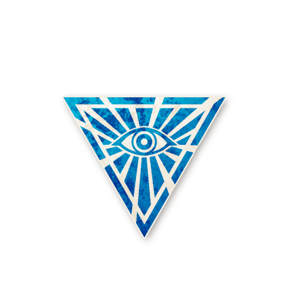

册
钟楼资料库
个人离线整理
全部
角色
剧本
规则
其他
游戏信息
首页
规则概要
重要细节
术语汇总
给说书人的建议
相克规则
认证说书人
角色
暗流涌动
黯月初升
梦殒春宵
旅行者
传奇角色
实验性角色
奇遇角色
华灯初上
角色能力类别总览
奥德赛 Odyssey
总览
镇民
外来者
爪牙
恶魔
传奇与奇遇角色
术语与概念
全部角色
海外自制角色
总览
镇民
外来者
爪牙
恶魔
传奇角色
全部角色
剧本
剧本库
剧本工具
工具
全角色索引（技能筛选）
全部页面
最近更改
图片列表
统计
随机页面
文件:Cultleader.png
来自钟楼百科

文件信息
文件名
Cultleader.png
大小
133,691 字节
尺寸
591 × 591 像素
MIME 类型
image/png
上传者
Savant
上传时间
2022-07-21T02:59:36Z
SHA1
2c4fc9e22f72aeb67c6ce30276672f916126e2d8
此文件被以下 7 个页面使用
暗流涌动
实验性角色
异教领袖
镇民
夜晚行动顺序一览
行成下孤乡
幽灵侦探
最后修改于 2022-07-21T02:59:36Z，编辑者
Savant
｜
查看原页面